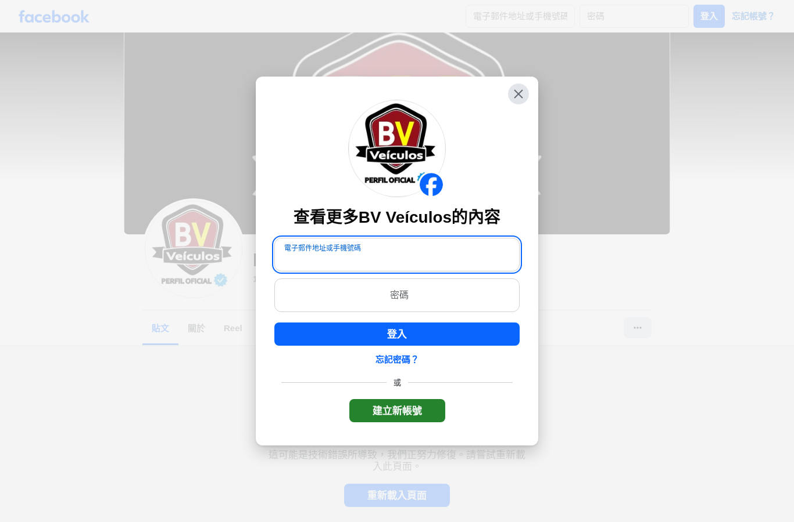

C8b34917a2d — facebook.com
https://www.facebook.com/bvveiculoseconsorcios/?locale=zh_TW
Prioridade: HIGH · Cenário: C_POSSIBLE_OFFICIAL_CHANNEL · Revisão humana: PENDING
1. Decisão Consolidada
Justificativa
A página no Facebook utiliza a marca BV tanto no nome exibido ('BV Veículos') quanto no handle ('@bvveiculoseconsorcios') para promover venda e financiamento de veículos. O logotipo do perfil inclui a inscrição 'PERFIL OFICIAL' e uma simulação gráfica de selo azul verificado. A ausência de declaração de correspondente bancário independente e o uso de recursos que simulam canal oficial configuram indício relevante de potencial indução a erro do consumidor, enquadrando o caso em C_POSSIBLE_OFFICIAL_CHANNEL com alta prioridade de auditoria. [Revisor: CONFIRM] Confirma-se a classificação STRONG_INDICATION (prioridade HIGH). Trata-se de página comercial de venda e financiamento de veículos que adota a sigla 'BV' como elemento central de sua marca e handle (@bvveiculoseconsorcios), além de estampar no avatar a expressão 'PERFIL OFICIAL' acompanhada de um selo gráfico de verificação falso. O uso desproporcional da marca e a ausência dos esclarecimentos regulatórios obrigatórios de correspondente bancário independente (Resolução CMN nº 4.935/2021) induzem o consumidor a erro quanto à oficialidade da página frente ao Banco BV.
Limitações
- apenas a URL descoberta foi inspecionada; páginas internas, formulários e fluxos após cliques não foram acessados
- requisitos contratuais/internos não fornecidos: mapeamento limitado ao texto normativo
2. Screenshots


3. Catálogo de Evidências (Dados Brutos Observados)
| Ref | Tipo | Local | Conteúdo |
|---|---|---|---|
| E-URL | domain | url | URL final: https://www.facebook.com/bvveiculoseconsorcios/?locale=zh_TW (domínio: www.facebook.com) |
| E-DISC-001 | text | search_index | Índice de busca (serper): BV Veículos (@bvveiculoseconsorcios) — Venda e financiamento de carros Entrada parcelada em até 18x no cartão CNPJ 15.478.596/0001-07. 數位創作者 · São Gonçalo, RJ · bvveiculos. 聖貢薩洛 ... |
| E-SHOT-VIEWPORT | screenshot | viewport | evidence/C8b34917a2d/attempt-1/viewport.png (sha256 40e868e526c60944…) |
| E-SHOT-FULL | screenshot | page | evidence/C8b34917a2d/attempt-1/fullpage.png (sha256 40e868e526c60944…) |
| E-TITLE | title | head | BV Veículos | Facebook |
| E-META-1 | meta | head | description: BV Veículos 。 1,308 位粉絲。 🚘 Venda e financiamento de carros 🔑 Entrada parcelada em até 18x no cartão CNPJ 15.478.596/0001-07 |
| E-META-2 | meta | head | og:title: BV Veículos |
| E-META-3 | meta | head | og:description: BV Veículos 。 1,308 位粉絲。 🚘 Venda e financiamento de carros 🔑 Entrada parcelada em até 18x no cartão CNPJ 15.478.596/0001-07 |
| E-CANONICAL | meta | head | https://www.facebook.com/bvveiculoseconsorcios?locale=zh_TW |
| E-HEAD-1 | heading | page | BV Veículos |
| E-HEAD-2 | heading | page | 此頁面目前無法顯示 |
| E-FOLD | text | viewport (acima da dobra) | 登入 忘記帳號？ BV Veículos 1,308 位追蹤者 • 正在追蹤 267 人 更多 貼文 關於 Reel 相片 此頁面目前無法顯示 這可能是技術錯誤所導致，我們正努力修復。請嘗試重新載入此頁面。 重新載入頁面 查看更多BV Veículos的內容 電子郵件地址或手機號碼 密碼 登入 忘記密碼？ 或 建立新帳號 |
| E-NAV | nav | header | 忘記帳號？ <https://www.facebook.com/recover/initiate?ars=royal_blue_bar> |
| E-CONTACT-1 | contact | header | 登入 <https://www.facebook.com/login/device-based/regular/login/?login_attempt=1&next=%2Fbvveiculoseconsorcios%2F%3Flocale%3Dzh_TW> |
| E-CONTACT-2 | contact | header | 忘記帳號？ <https://www.facebook.com/recover/initiate?ars=royal_blue_bar> |
| E-CONTACT-3 | contact | page | 查看個人檔案封面相片 <https://www.facebook.com/photo/?fbid=1765757640683329&set=a.101212847137825> |
| E-CONTACT-4 | contact | page | BV Veículos <https://www.facebook.com/photo/?fbid=1483546435571119&set=a.101185447140565&__tn__=%3C> |
| E-CONTACT-5 | contact | page | 1,308 位追蹤者 <https://www.facebook.com/bvveiculoseconsorcios/followers/> |
| E-CONTACT-6 | contact | page | 正在追蹤 267 人 <https://www.facebook.com/bvveiculoseconsorcios/following/> |
| E-CONTACT-7 | contact | page | 貼文 <https://www.facebook.com/bvveiculoseconsorcios/> |
| E-CONTACT-8 | contact | page | 關於 <https://www.facebook.com/bvveiculoseconsorcios/about> |
| E-CONTACT-9 | contact | page | Reel <https://www.facebook.com/bvveiculoseconsorcios/reels_tab> |
| E-CONTACT-10 | contact | page | 相片 <https://www.facebook.com/bvveiculoseconsorcios/photos> |
| E-CONTACT-11 | contact | page | <https://www.facebook.com/bvveiculoseconsorcios> |
| E-CONTACT-12 | contact | page | 忘記密碼？ <https://www.facebook.com/recover/initiate?ars=royal_blue_bar> |
| E-IMG-1 | image | page (acima da dobra) | imagem alt='' src=https://scontent.fcgh22-1.fna.fbcdn.net/v/t39.30808-6/481996327_1682889188970175_8821037553010220624_n.jpg?stp=dst-jpg_fb50_s320x320_tt6&_nc_cat=105&_nc_map=urlgen_bucketless&ccb=1-7&_nc_sid=cc71e4&_n (1366x1366, acima da dobra) |
| E-IMG-2 | image | page (acima da dobra) | imagem alt='' src=https://scontent.fcgh22-1.fna.fbcdn.net/v/t39.30808-6/481996327_1682889188970175_8821037553010220624_n.jpg?stp=dst-jpg_tt6&cstp=mx1080x1080&ctp=s960x960&_nc_cat=105&_nc_map=urlgen_bucketless&ccb=1-7&_ (940x940, acima da dobra) |
| E-IMG-3 | image | page (acima da dobra) | imagem alt='BV Veículos' src= (168x168, acima da dobra) |
| E-IMG-4 | image | page (acima da dobra) | imagem alt='' src=https://www.facebook.com/images/icons/FBLogo_Blueprint.png (46x46, acima da dobra) |
| E-TXT-001 | text | page | BV Veículos |
4. Análise de Marca (gemini-3.8-flash, brand-analyst/v5)
Dimensões Avaliadas
| Dimensão | Sinal | Achado | Refs |
|---|---|---|---|
| INSTITUTIONAL_LANGUAGE | CONFUSION | O avatar exibe a inscrição explícita 'PERFIL OFICIAL' acompanhada de um selo estilizado que imita um badge de verificação azul, criando falsa impressão de chancela institucional. | E-SHOT-VIEWPORT |
| DECLARED_COMMERCIAL_IDENTITY | CONFUSION | Nome do perfil 'BV Veículos' e handle '@bvveiculoseconsorcios' apropriam-se diretamente da marca BV para oferta de serviços de crédito e veículos. | E-URL E-TITLE E-META-1 |
| CORRESPONDENT_TRANSPARENCY | CONFUSION | Embora informe o CNPJ 15.478.596/0001-07 na descrição, não há qualquer indicação sobre a condição de correspondente bancário ou relação jurídica com o Banco BV. | E-META-1 E-DISC-001 |
| VISUAL_IDENTITY | CONFUSION | Emblema centraliza a sigla 'BV' em destaque no logotipo da loja, remetendo diretamente ao setor de financiamento de veículos do Banco BV. | E-SHOT-VIEWPORT |
Indícios de Confusão
- [HIGH] INSTITUTIONAL_LANGUAGE: Utilização da expressão 'PERFIL OFICIAL' juntamente com elemento visual que emula selo de verificação azul na imagem de perfil do avatar. — E-SHOT-VIEWPORT E-IMG-1 E-IMG-2
- [HIGH] DECLARED_COMMERCIAL_IDENTITY: Uso da sigla e marca 'BV' como núcleo do nome de perfil e identificador na rede social (@bvveiculoseconsorcios e 'BV Veículos') ofertando financiamento automotivo. — E-URL E-TITLE E-META-1 E-DISC-001
- [HIGH] CORRESPONDENT_TRANSPARENCY: Ausência total de declaração formal de correspondente bancário (Resolução CMN nº 4.935/2021) e de canais de ouvidoria da instituição financeira. — E-FOLD E-META-1
- [HIGH] CONSUMER_CONFUSION: Potencial indução a erro do consumidor quanto à oficialidade da página, associando a sigla 'BV' diretamente a venda e financiamento de veículos sob a alegação de canal oficial. — E-SHOT-VIEWPORT E-META-1 E-DISC-001
Indícios de Relação Legítima
- [LOW] DECLARED_COMMERCIAL_IDENTITY: Informa CNPJ próprio de terceiro (15.478.596/0001-07) no texto descritivo da página. — E-META-1 E-DISC-001
Fatos Observados
- Página do Facebook sob o identificador @bvveiculoseconsorcios e título 'BV Veículos'.
- Descrição informa oferta de 'Venda e financiamento de carros' e o CNPJ 15.478.596/0001-07.
- Avatar exibe logotipo com a sigla 'BV', a palavra 'Veículos' e a menção 'PERFIL OFICIAL' com desenho de selo azul de verificação.
- Não foi identificada declaração de correspondente bancário nos termos da Resolução CMN nº 4.935/2021 nem menção a canais de ouvidoria do Banco BV.
- Não se trata de domínio oficial do conglomerado Banco BV.
Incertezas
- O bloqueio por tela de login do Facebook impede a visualização completa das postagens individuais e detalhes adicionais da aba Sobre.
Síntese do Analista
A página no Facebook utiliza a marca BV tanto no nome exibido ('BV Veículos') quanto no handle ('@bvveiculoseconsorcios') para promover venda e financiamento de veículos. O logotipo do perfil inclui a inscrição 'PERFIL OFICIAL' e uma simulação gráfica de selo azul verificado. A ausência de declaração de correspondente bancário independente e o uso de recursos que simulam canal oficial configuram indício relevante de potencial indução a erro do consumidor, enquadrando o caso em C_POSSIBLE_OFFICIAL_CHANNEL com alta prioridade de auditoria.
5. Identidade do Responsável
cnpj:15478596000107
Empresa identificada na página sem declaração de relação de correspondente; anunciar produtos da marca não comprova vínculo.
Fatos Observados
| Tipo | Valor | Ref | Contexto |
|---|---|---|---|
| domain | facebook.com | E-URL | |
| cnpj | 15.478.596/0001-07 | E-DISC-001 | er): BV Veículos (@bvveiculoseconsorcios) — Venda e financiamento de carros Entrada parcelada em até 18x no cartão CNPJ 15.478.596/0001-07 |
| social_profile | https://www.facebook.com/bvveiculoseconsorcios/?locale=zh_TW | E-URL | |
| social_profile | https://www.facebook.com/bvveiculoseconsorcios?locale=zh_TW | E-CANONICAL | |
| social_profile | https://www.facebook.com/recover/initiate?ars=royal_blue_bar | E-NAV | |
| social_profile | https://www.facebook.com/login/device-based/regular/login/?login_attempt=1&next=%2Fbvveiculoseconsorcios%2F%3Flocale%3Dzh_TW | E-CONTACT-1 | |
| social_profile | https://www.facebook.com/photo/?fbid=1765757640683329&set=a.101212847137825 | E-CONTACT-3 | |
| social_profile | https://www.facebook.com/photo/?fbid=1483546435571119&set=a.101185447140565&__tn__=%3C | E-CONTACT-4 | |
| social_profile | https://www.facebook.com/bvveiculoseconsorcios/followers/ | E-CONTACT-5 | |
| social_profile | https://www.facebook.com/bvveiculoseconsorcios/following/ | E-CONTACT-6 | |
| social_profile | https://www.facebook.com/bvveiculoseconsorcios/ | E-CONTACT-7 | |
| social_profile | https://www.facebook.com/bvveiculoseconsorcios/about | E-CONTACT-8 | |
| social_profile | https://www.facebook.com/bvveiculoseconsorcios/reels_tab | E-CONTACT-9 | |
| social_profile | https://www.facebook.com/bvveiculoseconsorcios/photos | E-CONTACT-10 | |
| social_profile | https://www.facebook.com/bvveiculoseconsorcios | E-CONTACT-11 | |
| social_profile | https://www.facebook.com/images/icons/FBLogo_Blueprint.png | E-IMG-4 |
Inferências de Associação (Não são Fatos)
- base da associação: cnpj publicado na página
6. Mapeamento de Conformidade (Hipóteses)
Mapeamento indicativo para apoio à auditoria. Não constitui conclusão regulatória; a decisão definitiva pertence à auditoria.
Res. CMN 4.935/2021, art. 14, inciso II — NOT_APPLICABLE_UNLESS_COBAN
Fonte: NORMATIVE
Art. 14. O contrato de correspondente deve estabelecer: [...] II - vedação à utilização, pelo contratado, de logomarca ou de outros atributos que sejam similares aos adotados pela instituição contratante em suas agências, postos de atendimento, sítio eletrônico na internet, aplicativo ou outras plataformas de comunicação em rede;
Hipótese: Uso de logomarca, uso excessivo/desproporcional ou de atributos similares aos adotados pela contratante em seus canais. A norma disciplina correspondentes contratados; o responsável não foi identificado como correspondente.
Evidência observada: E-SHOT-VIEWPORT
Informação faltante:
- confirmar se o responsável é correspondente contratado (relação pública da contratante — art. 21 — ou base interna)
Res. CMN 4.935/2021, art. 14, inciso III, alíneas a e b — NOT_APPLICABLE_UNLESS_COBAN
Fonte: NORMATIVE
Art. 14. O contrato de correspondente deve estabelecer: [...] III - divulgação ao público, pelo contratado, de sua condição de prestador de serviços à instituição contratante, identificada pelo nome com que é conhecida no mercado, com descrição dos produtos e serviços oferecidos e canais de contato da instituição contratante, inclusive de sua ouvidoria, em local visível, em destaque e em formato legível, por meio de: a) sítio eletrônico do correspondente na internet, acessível na página inicial; b) aplicativo e outras plataformas de comunicação em rede do correspondente; [...]
Hipótese: Divulgação ao público da condição de prestador de serviços/parceria ausente, insuficiente, ambígua ou sem destaque. A norma disciplina correspondentes contratados; o responsável não foi identificado como correspondente.
Evidência observada: E-DISC-001 E-FOLD E-IMG-1 E-IMG-2 E-META-1 E-SHOT-VIEWPORT E-TITLE E-URL
Informação faltante:
- confirmar se o responsável é correspondente contratado (relação pública da contratante — art. 21 — ou base interna)
- canais de contato/ouvidoria da contratante não observados no material coletado (podem existir em páginas não inspecionadas)
Res. CMN 4.935/2021, art. 3º — NO_INDICATION_OBSERVED
Fonte: NORMATIVE
Art. 3º O correspondente atua por conta e sob as diretrizes da instituição contratante, que assume inteira responsabilidade pelo atendimento prestado aos clientes e usuários por meio do contratado.
Evidência observada: —
Se o responsável não for correspondente contratado, os indícios podem caracterizar uso indevido de marca ou fraude, fora do escopo da Res. 4.935: avaliar encaminhamento às áreas jurídica/segurança.
Limitações: requisitos contratuais/internos não fornecidos: mapeamento limitado ao texto normativo
7. Revisão Crítica (gemini-3.8-flash)
Decisão: CONFIRM → STRONG_INDICATION / HIGH
Confirma-se a classificação STRONG_INDICATION (prioridade HIGH). Trata-se de página comercial de venda e financiamento de veículos que adota a sigla 'BV' como elemento central de sua marca e handle (@bvveiculoseconsorcios), além de estampar no avatar a expressão 'PERFIL OFICIAL' acompanhada de um selo gráfico de verificação falso. O uso desproporcional da marca e a ausência dos esclarecimentos regulatórios obrigatórios de correspondente bancário independente (Resolução CMN nº 4.935/2021) induzem o consumidor a erro quanto à oficialidade da página frente ao Banco BV.
| Tema | Severidade | Questionamento | Refs |
|---|---|---|---|
| Nenhum questionamento | |||
8. Origem da Descoberta
| Fonte | Consulta / hipótese | URL original | Título / trecho |
|---|---|---|---|
| serper | (intitle:"BV Veículos" OR intitle:"Agência BV") (financiamento OR seminovos OR veículos) -site:bv.com.br -site:bancobv.com.br -site:bvfinanceira.com.br -site:bvinvestimentos.com.br -site:napista.com.br -site:bvopen.com.br -site:meufinanciamentosolar.com.br -site:votorantim.com.br -site:vam.com.br -site:reclameaqui.com.br -site:jusbrasil.com.br -site:jus.br H1-identity:title-brand | https://www.facebook.com/bvveiculoseconsorcios/?locale=zh_TW | BV Veículos (@bvveiculoseconsorcios) Venda e financiamento de carros Entrada parcelada em até 18x no cartão CNPJ 15.478.596/0001-07. 數位創作者 · São Gonçalo, RJ · bvveiculos. 聖貢薩洛 ... |
9. Cadeia de Custódia da Coleta
sha256 623b74595e6923da012de2debd1db70d1efc2e3656a9c4ddfa49fe2b12632ced
Original: https://www.facebook.com/bvveiculoseconsorcios/?locale=zh_TW
Final: https://www.facebook.com/bvveiculoseconsorcios/?locale=zh_TW
| Artefato | Caminho | SHA-256 | Bytes |
|---|---|---|---|
| screenshot_viewport | evidence/C8b34917a2d/attempt-1/viewport.png | 40e868e526c6094461e61954ff10854099d6c135d9b1afa7be9d6ffe3a4f693f | 132275 |
| screenshot_full | evidence/C8b34917a2d/attempt-1/fullpage.png | 40e868e526c6094461e61954ff10854099d6c135d9b1afa7be9d6ffe3a4f693f | 132275 |
| html | evidence/C8b34917a2d/attempt-1/page.html.txt | 68d27f2d9d945544feb690f604e477bb7d00195823a828054ccbc9141ce98f8f | 1043293 |
| text | evidence/C8b34917a2d/attempt-1/text.txt | 5faf243457feed527f5ce615119c70ab9af5e04e787e5095012448886cb5d148 | 373 |
| page_data | evidence/C8b34917a2d/attempt-1/page.json | cf3181b567b52c5457427915aead21d0b8d78ff1afb0500c2aee5cc4d067d71a | 8788 |
Ocorrências e conteúdo não inspecionado
- apenas a URL descoberta foi inspecionada; páginas internas, formulários e fluxos após cliques não foram acessados
10. Histórico de Estados
| Quando | De | Para | Nota |
|---|---|---|---|
| 2026-11-25T18:12:12+00:00 | DISCOVERED | QUEUED | prioritised (score 0.0) |
| 2026-11-25T19:37:37+00:00 | QUEUED | COLLECTING | |
| 2026-11-25T19:37:43+00:00 | COLLECTING | COLLECTED | |
| 2026-11-25T19:37:43+00:00 | COLLECTED | ANALYZING | |
| 2026-11-25T19:38:06+00:00 | ANALYZING | REVIEWING | |
| 2026-11-25T19:38:15+00:00 | REVIEWING | COMPLETED |